Accounts
The right account, every time.
An account is just a config folder. Pick one per tool for each project, and every terminal opens already signed in as the right you.
Free for macOS · MIT licensed
A calm workspace for Claude Code, Codex and friends. Projects, terminals, files, git and chat in one window, and the right account for every project.
curl -fL github.com/s-nish/desk/releases/latest/download/Desk.dmg -o ~/Downloads/Desk.dmg && open ~/Downloads/Desk.dmg
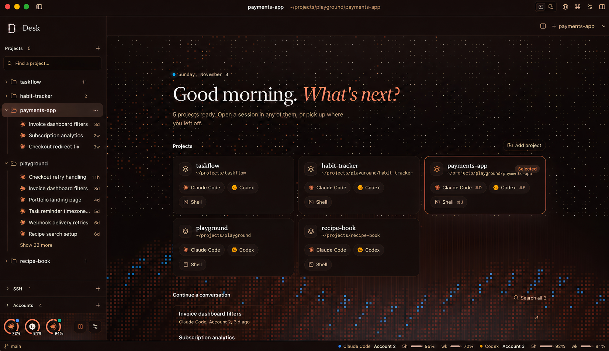
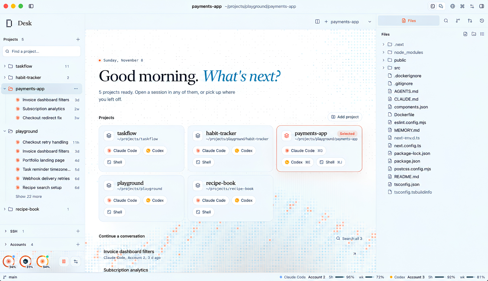
Runs the agents you already use
The tour
Terminals in the middle, files on the right, projects on the left. Everything an agent touches stays in view.
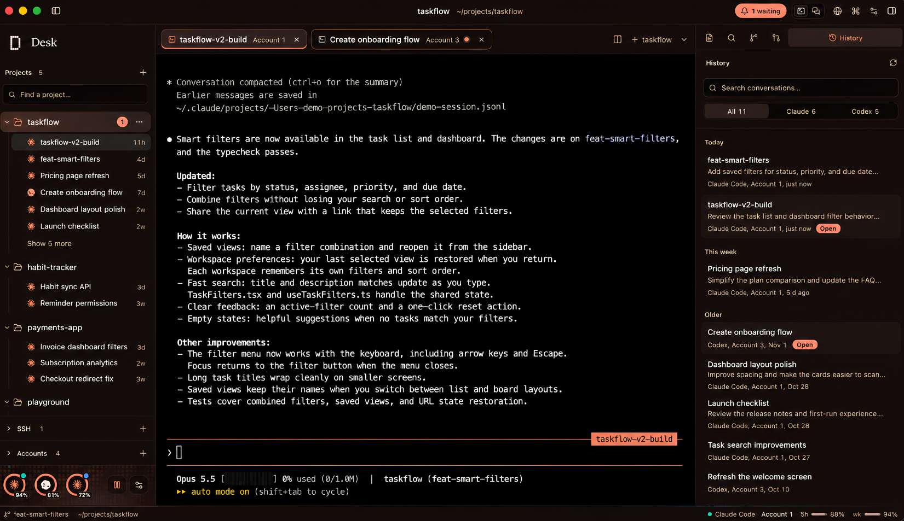
Real terminals, real history. Every Claude Code and Codex conversation for the project, one click from where you left it. 20,000 lines of scrollback that never yank you to the bottom.
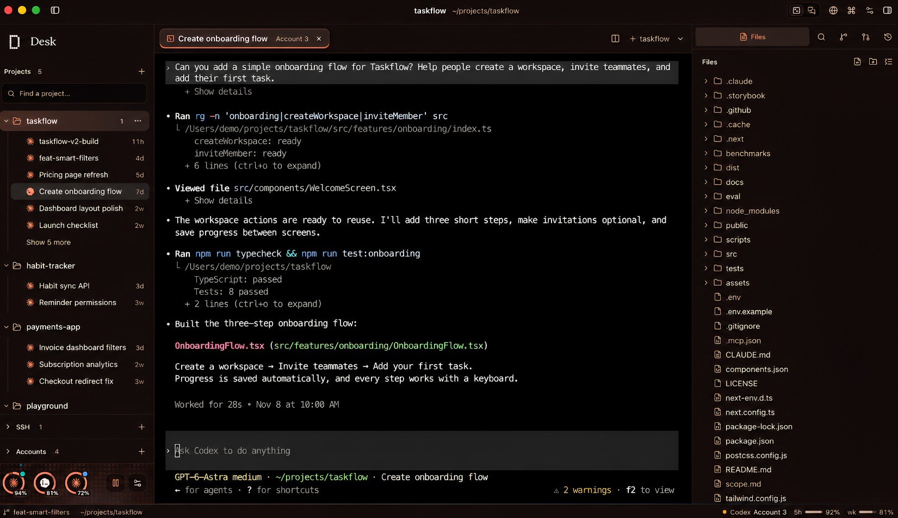
Files beside the session. Browse the tree while the agent works. Edit with syntax highlighting, preview images, PDFs and CSV, and keep unsaved buffers across restarts.
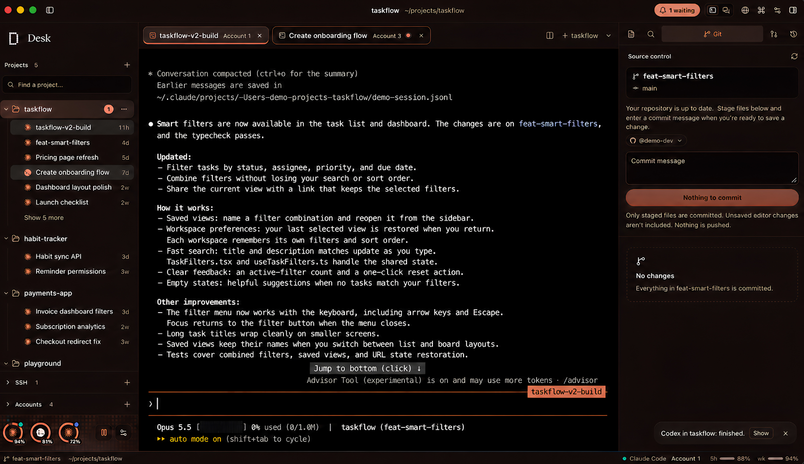
Review before you ship. Stage, commit and open pull requests with the project's own GitHub account. Desk never pushes on its own, and tells you when an agent finishes.
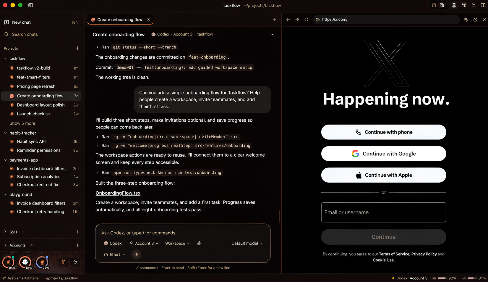
Chat, with a browser docked. Prefer a conversation to a terminal? Same agents, same accounts. Dock a browser beside it and point at what needs fixing.
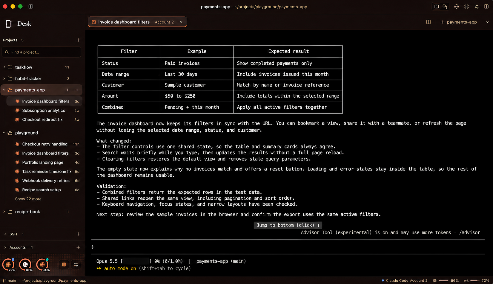
Output you can actually read. Tuned terminal palettes with 7:1 text contrast, so long agent summaries stay easy on the eyes.
Features
Accounts
An account is just a config folder. Pick one per tool for each project, and every terminal opens already signed in as the right you.
Usage
Rings for every account. Cantaloupe from 80%, red at the limit.
Two views
Same agents, same sessions. Flip per project.
Review
Leave notes in the diff and send them to the agent as one tidy prompt. Open PRs and watch checks through gh.
Browser
Design mode picks any element on your dev server and passes it to the agent.
Worktrees
Agents work side by side without stepping on each other.
Recovery
Open files, unsaved buffers, splits and tab order all come back.
Private
Desk never stores or sends them. Sign-in runs through each tool's own login.
Themes
Try one. The pixels on this page follow along.
SSH
Paste your ssh command once. Desk saves it and can type the password when asked.
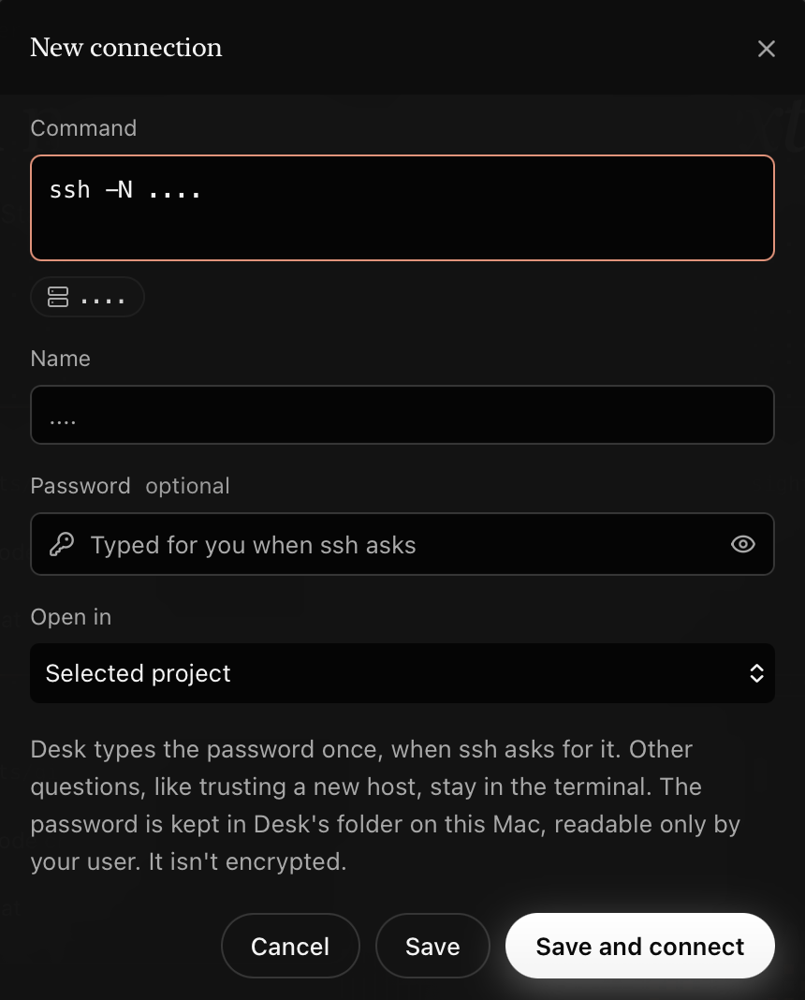
Make it yours
Themes for the app, the terminal and the editor, each chosen on its own. Accounts for every tool, all in one place.
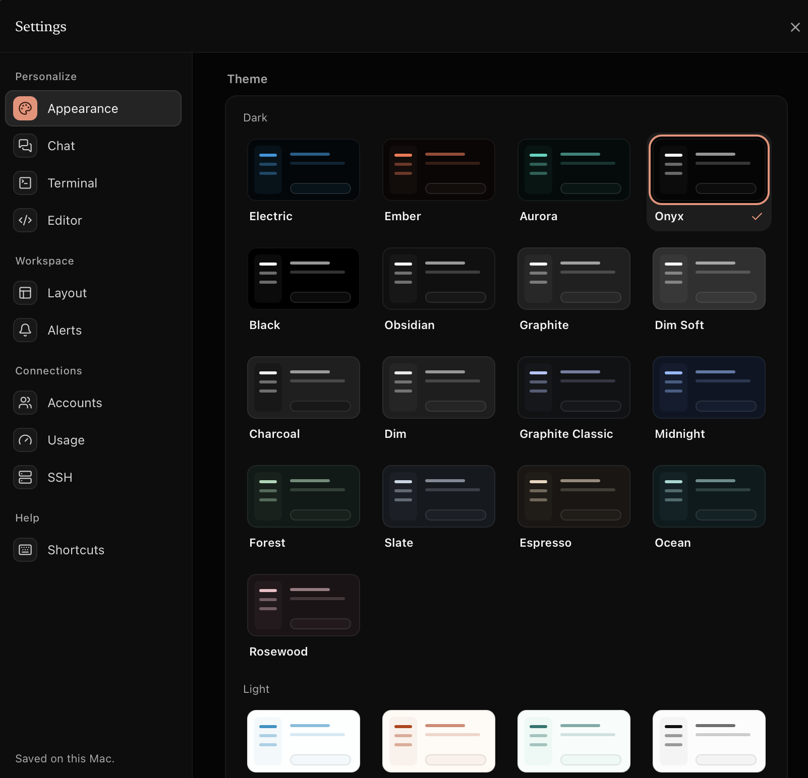
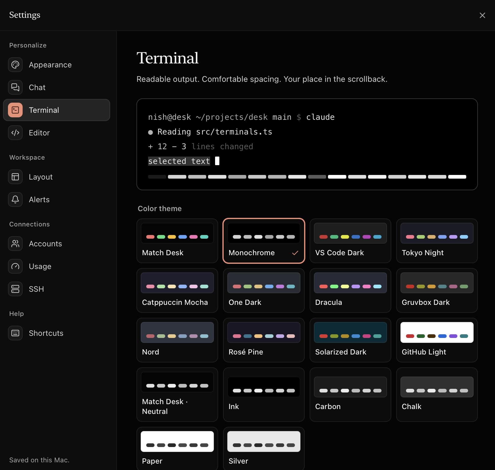
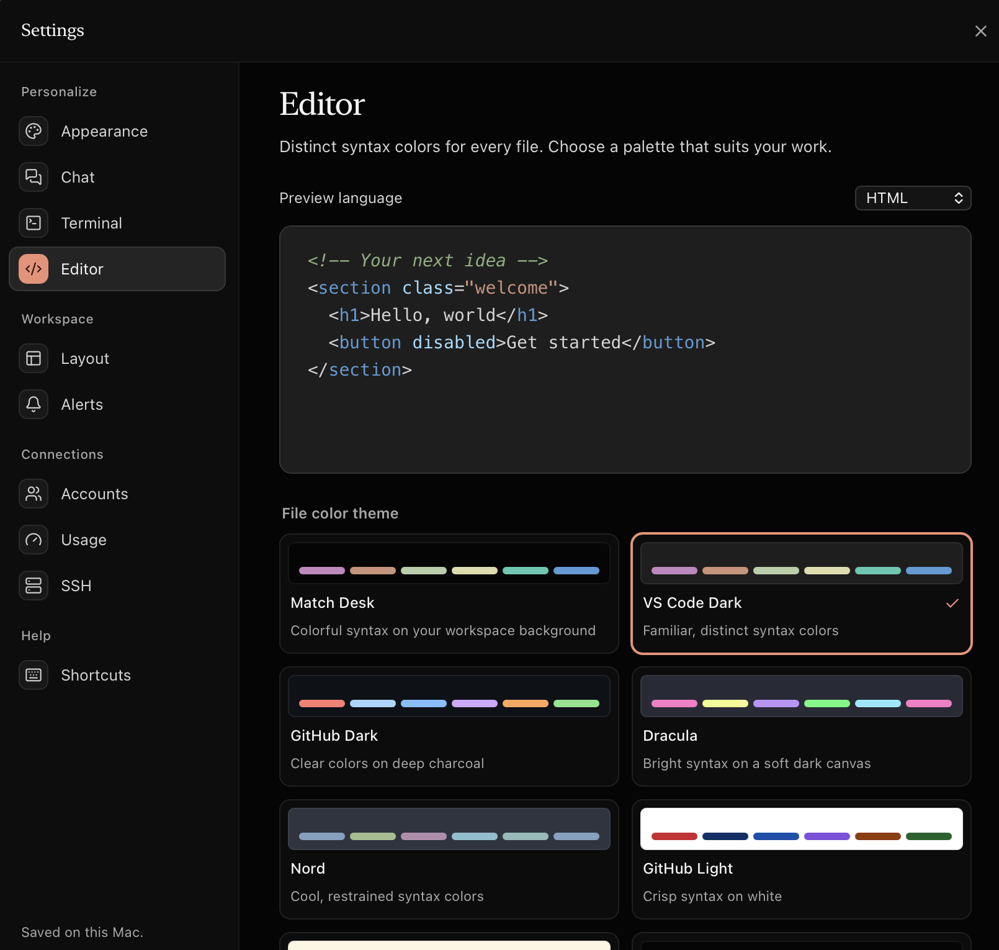
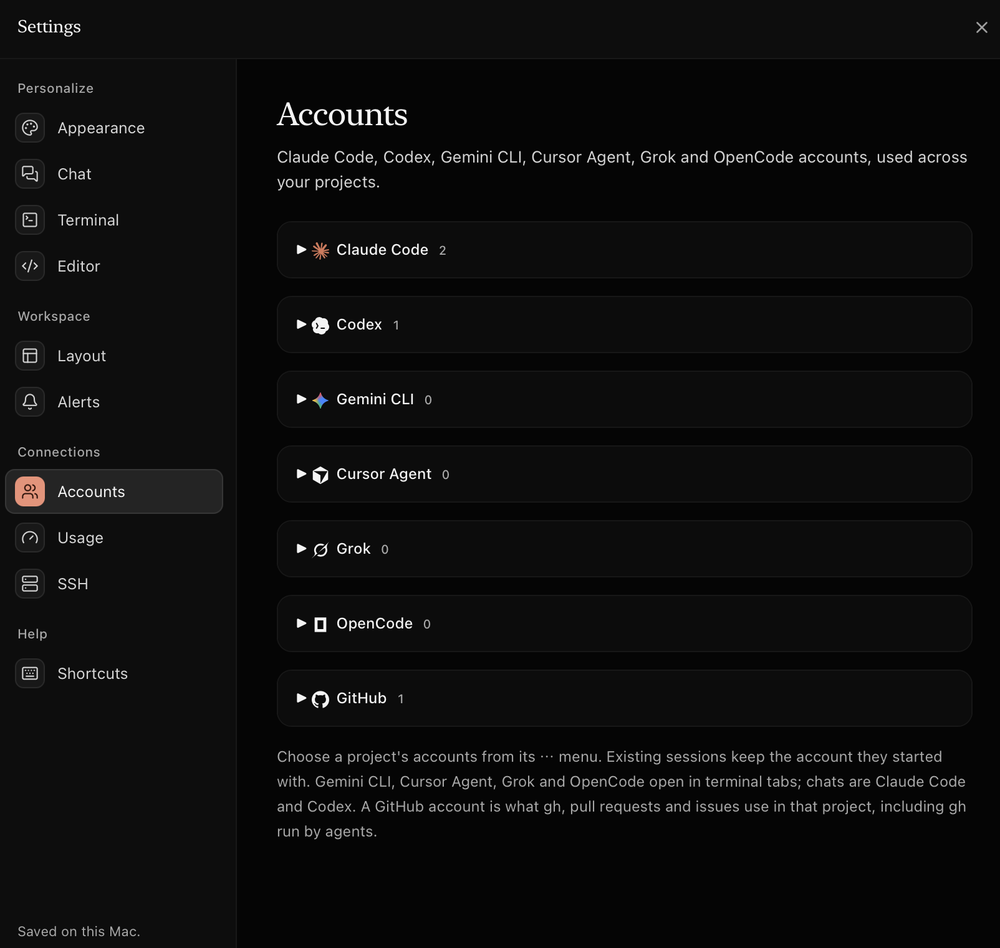
How it works
Desk finds the accounts you already have. Nothing to migrate, nothing to paste.
~/.claude* and ~/.codex* on launch. Add more with each tool's own sign-in.Shortcuts
FAQ
Yes. Desk is free and open source under the MIT License. You bring your own Claude Code, Codex or other agent subscriptions.
Yes. Desk runs the command-line tools you already use, like claude and codex, so install and sign in to them the usual way. Desk then picks the right account for each project.
No. An account is a config folder, and Desk only sets the folder path for each terminal. To show which email is signed in, it reads that one field locally. Tokens are never stored or sent.
Desk isn't notarized yet. Open System Settings ▸ Privacy & Security and choose Open Anyway, or right-click Desk in Applications and pick Open. Installing with the Terminal command at the top of the page avoids this prompt.
The download is built for Apple silicon. On an Intel Mac you can build it from source with Rust and Node in a few minutes.